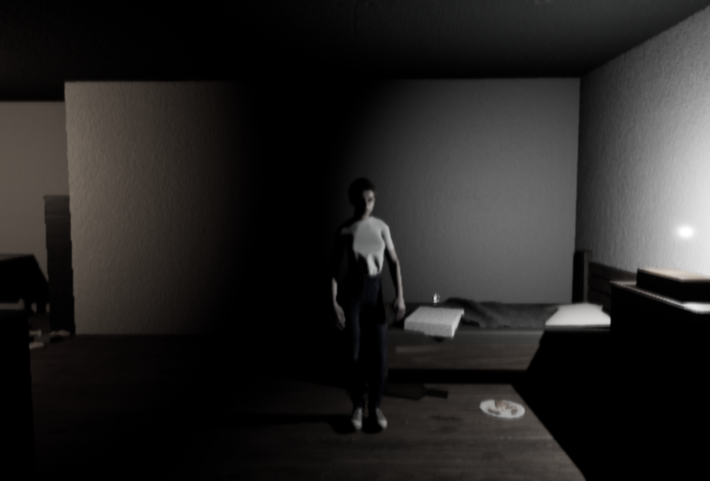
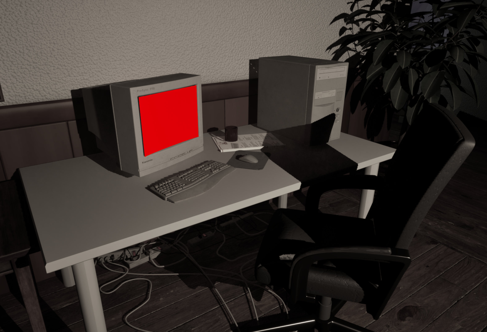
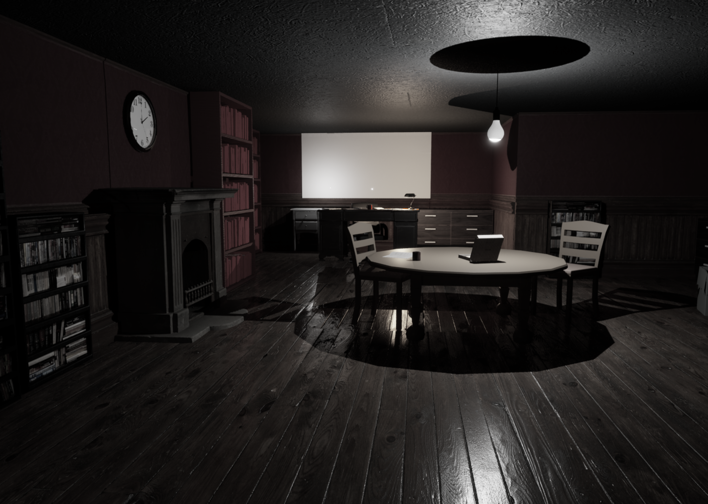
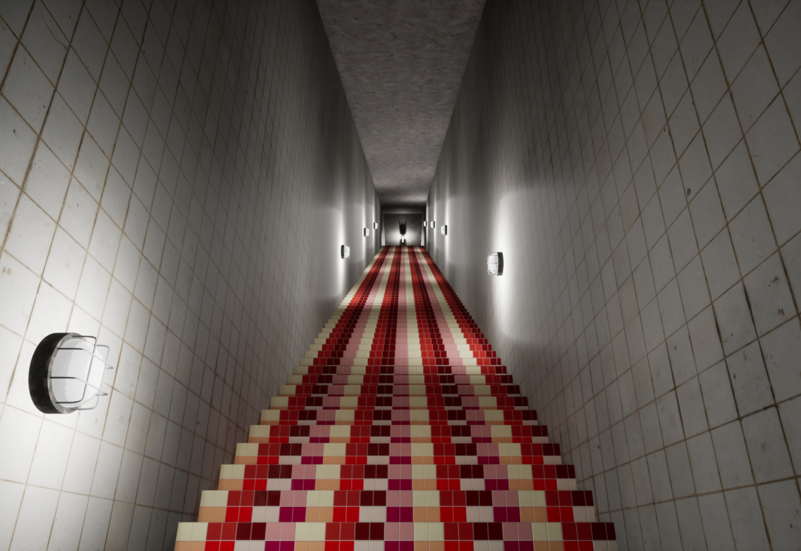
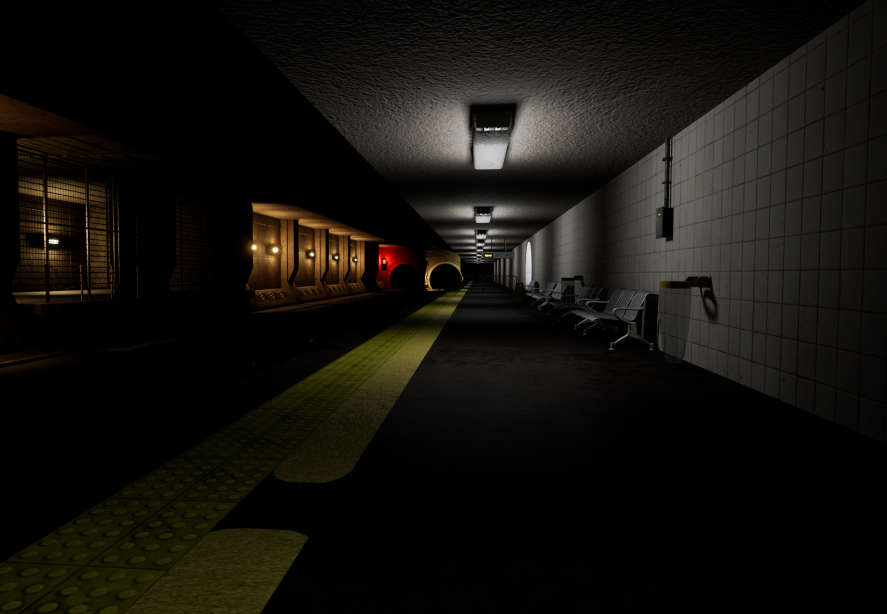

Are you sure that's you in the mirror? The Me in the Mirror is an intense and uncomfortable psychological horror walking simulator placing players in the shoes of Daisy whilst she suffers from depersonalization-derealization disorder and attempts to recover from an abusive relationship.
Players will follow Daisy as she attempts to go through her daily routine split between the 4 levels, getting dressed in the morning, travelling to work, working in an office and travelling back home as reality slowly crumbles around her. Haunted by her past abusive relationship and the DPDR it left her with gives Daisy and by extension the player no choice but to confront this deep-rooted trauma and her loosening tether on reality and her self-perception.
A full walkthrough of the me in the mirror, I was responsible for the first level of the game

An image showing the mirror in the players room, this is the first thing they see upon starting level 1

An image of the computer in Daisy's room, notice the washed out filter that ignores the colour red which was programmed by a game development student that helped us throughout

An image showing the study room found in the upstairs of Daisy's house
An image of the dream world landscape that players are transported to halfway through the first level

An image of a foreboding staircase found in level four

An image of the subway station found in level four
An image of the upside down train carriage players are chased through in level four
An image of the Me in the Mirror logo we use on the games itch page and within the game design documentation
My Responsibilities
The development of The Me in the Mirror was one of the most difficult challenges I have faced so far. During the project I had to learn how to use Unreal Engine 5 and its blueprint programming system from scratch. However, I believe that I now have a deeper knowledge of Unreal Engine 5 because of the project and the short amount of time we had to make it pushing me to my limits.
Alongside learning Unreal Engine 5, I and another designer, designed every aspect of the game together from the ground up. Our extensive documentation for the game can be found through the link on the right.
Furthermore, the small team size pushed me towards managing the production of the project. This was an area I previously had little experience in however through managing deadlines, tasks, backlogs and much more during the Me in the Mirror’s development I have expanded and improved my production skills greatly.
Another major responsibility of mine was to develop the first level of the game. Due to the nature of the university course, I had to do this on my own, adding all the scripting, sound effects, environment art, lighting and more by myself. This was a major challenge however I believe it has deepened my knowledge of the level design process greatly, providing me with experience with environment art and scripting which I previously lacked.
My final major responsibility was in programming the major systems of the game. I was responsible for programming all universal game systems that were not specific to a level for example one of the things I programmed was the player and environment interaction code that is used across the entire project. This provided me with a lot of experience and learning opportunities regarding blueprint programming
Contact Me
I would love to chat! Feel free to contact me using the information below